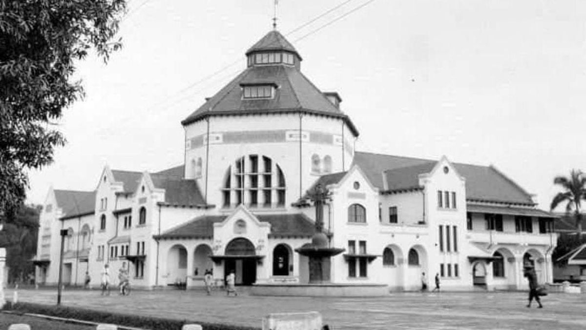
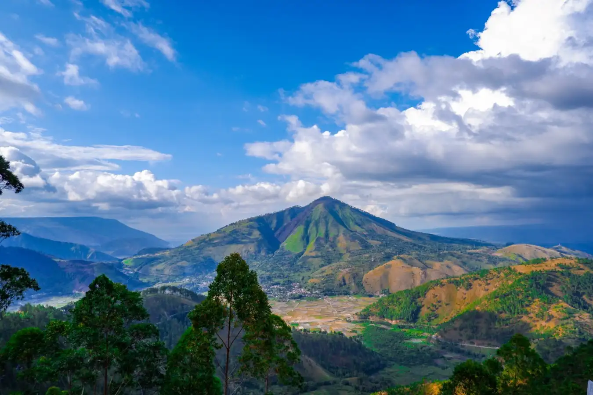
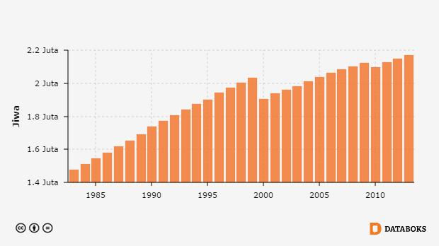
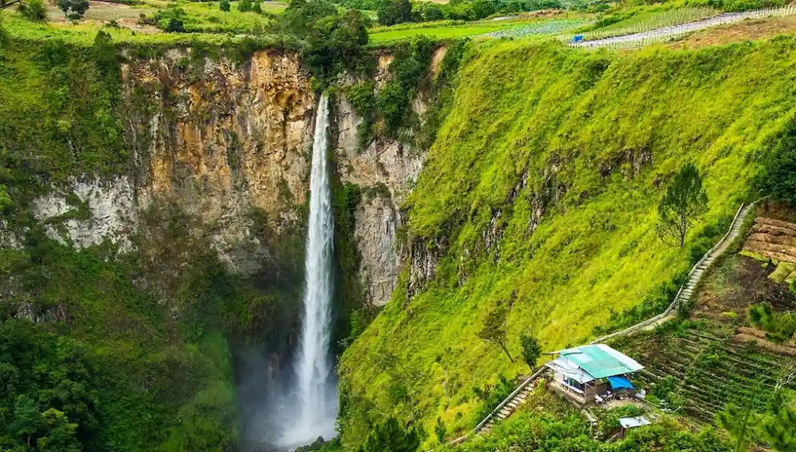

Sejarah

Sejarah Sumatera Utara
Pada zaman pemerintahan Belanda, Sumatera Utara merupakan suatu pemerintahan yang bernama Gouvernement van Sumatra dengan wilayah meliputi seluruh pulau Sumatra yang dipimpin oleh seorang gubernur yang berkedudukan di Kota Medan.Kemudian pada tahun 1948, berdasarkan Undang-undang Republik Indonesia No. 10 Tahun 1948, Provinsi Sumatera dibagi menjadi tiga provinsi berbeda yaitu: Sumatera Utara, Sumatera Tengah, dan Sumatera Selatan. Provinsi Sumatera Utara sendiri merupakan penggabungan dari tiga daerah administratif yang disebut keresidenan yaitu: Keresidenan Aceh, Keresidenan Sumatera Timur, dan Keresidenan Tapanuli.
Dengan diterbitkannya Undang-Undang Republik Indonesia (R.I.) No. 10 Tahun 1948 pada tanggal 15 April 1948, ditetapkan bahwa Sumatera dibagi menjadi tiga provinsi yang masing-masing berhak mengatur dan mengurus rumah tangganya sendiri yaitu: Provinsi Sumatera Utara, Provinsi Sumatera Tengah, dan Provinsi Sumatera Selatan.Hari jadi Provinsi Sumatera Utara kemudian ditetapkan pada tanggal 15 April 1948.
Pada awal tahun 1949, dilakukan kembali reorganisasi pemerintahan di Sumatra. Dengan Keputusan Pemerintah Darurat R.I. Nomor 22/Pem/PDRI pada tanggal 17 Mei 1949, jabatan Gubernur Sumatera Utara ditiadakan. Selanjutnya dengan Ketetapan Pemerintah Darurat R.I. pada tanggal 17 Desember 1949, dibentuk Provinsi Aceh dan Provinsi Tapanuli/Sumatera Timur. Kemudian, dengan Peraturan Pemerintah Pengganti Undang-Undang No. 5 Tahun 1950 pada tanggal 14 Agustus 1950, ketetapan tersebut dicabut dan dibentuk kembali Provinsi Sumatera Utara.
Dengan Undang-Undang R.I. No. 24 Tahun 1956 yang diundangkan pada tanggal 7 Desember 1956, dibentuk Daerah Otonom Provinsi Aceh, sehingga wilayah Provinsi Sumatera Utara sebagian menjadi wilayah Provinsi Aceh.
Geografis

Menara Pandang Tele
Provinsi Sumatera Utara terletak pada 1°–4° Lintang Utara dan 98°–100° Bujur Timur. Daratan di Provinsi Sumatera Utara seluas 72.981,23 km2. Sumatera Utara pada dasarnya dapat dibagi atas Pesisir Timur, Pegunungan Bukit Barisan, Pesisir Barat, dan Kepulauan Nias.
Pesisir timur merupakan wilayah di dalam provinsi yang paling pesat perkembangannya karena persyaratan infrastruktur yang relatif lebih lengkap daripada wilayah lainnya. Wilayah pesisir timur juga merupakan wilayah yang relatif padat konsentrasi penduduknya dibandingkan wilayah lainnya. Pada masa kolonial Hindia Belanda, wilayah ini termasuk residentie Sumatra's Oostkust bersama provinsi Riau.
Di wilayah tengah provinsi berjajar Pegunungan Bukit Barisan. Di pegunungan ini terdapat beberapa wilayah yang menjadi kantong-kantong konsentrasi penduduk. Daerah di sekitar Danau Toba dan Pulau Samosir, merupakan daerah padat penduduk yang menggantungkan hidupnya kepada danau ini.
Pesisir barat merupakan wilayah yang cukup sempit, dengan komposisi penduduk yang terdiri dari masyarakat Batak, Minangkabau, dan Aceh.
Batas Wilayah
Wilayah Provinsi Sumatera Utara meliputi sebanyak 419 pulau. Provinsi Sumatera Utara memiliki dua pulau terluar. Pertama ialah Pulau Simuk yang berada di Kepulauan Nias. Kedua ialah Pulau Berhala di Selat Malaka. Kepulauan Nias terdiri dari 132 pulau yang dibedakan menjadi 1 pulau besar dan 131 pulau kecil. Pulau besarnya ialah pulau Nias. sementara pulau-pulau kecilnya berada di sekitarnya.[18] Kepulauan Nias terletak di lepas pantai pesisir barat di Samudra Hindia. Pusat pemerintahan terletak di Gunung Sitoli.
Kepulauan Batu terdiri dari 51 pulau dengan 4 pulau besar: Sibuasi, Pini, Tanahbala, Tanahmasa. Pusat pemerintahan di Pulautelo di pulau Sibuasi. Kepulauan Batu terletak di tenggara kepulauan Nias. Pulau-pulau lain di Sumatera Utara: Imanna, Pasu, Bawa, Hamutaia, Batumakalele, Lego, Masa, Bau, Simaleh, Makole, Jake, dan Sigata, Wunga.
Di Sumatera Utara saat ini terdapat dua taman nasional, yakni Taman Nasional Gunung Leuser dan Taman Nasional Batang Gadis. Menurut Keputusan Menteri Kehutanan, Nomor 44 Tahun 2005, luas hutan di Sumatera Utara saat ini 3.742.120 hektare (ha). Yang terdiri dari Kawasan Suaka Alam/Kawasan Pelestarian Alam seluas 477.070 ha, Hutan Lindung 1.297.330 ha, Hutan Produksi Terbatas 879.270 ha, Hutan Produksi Tetap 1.035.690 ha dan Hutan Produksi yang dapat dikonversi seluas 52.760 ha.
Namun angka ini sifatnya secara de jure saja. Sebab secara de facto, hutan yang ada tidak seluas itu lagi. Terjadi banyak kerusakan akibat perambahan dan pembalakan liar. Sejauh ini, sudah 206.000 ha lebih hutan di Sumut telah mengalami perubahan fungsi. Telah berubah menjadi lahan perkebunan, transmigrasi. Dari luas tersebut, sebanyak 163.000 ha untuk areal perkebunan dan 42.900 ha untuk areal transmigrasi.
Iklim
Iklim di Kota Medan adalah iklim tropis. Pada bulan Mei hingga September, curah hujan ringan. Sedangkan Oktober hingga April, curah hujan relatif lebat akibat intensitas udara yang lembap.
Demokrasi
Penduduk

Jumlah Penduduk per tahun 2010
Sumatera Utara merupakan provinsi keempat terbesar jumlah penduduknya di Indonesia setelah Jawa Barat, Jawa Timur, dan Jawa Tengah. Menurut hasil pencacahan lengkap Sensus Penduduk (SP) 1990, penduduk Sumatera Utara berjumlah 10,81 juta jiwa, dan pada tahun 2010 jumlah penduduk Sumatera Utara telah meningkat menjadi 12,98 juta jiwa. Kepadatan penduduk Sumatera Utara pada tahun 1990 adalah 143 jiwa per km² dan pada tahun 2010 meningkat menjadi 178 jiwa per km². Dengan Laju Pertumbuhan Penduduk dari tahun 2000-2010 sebesar 1,10 persen. Sensus penduduk tahun 2020, penduduk Sumatera Utara bertambah menjadi 13.937.797 jiwa, dengan kepadatan penduduk 191 jiwa/km², dan per 31 Desember 2022 berjumlah 15.372.437 jiwa.
Tingkat Partisipasi Angkatan Kerja (TPAK) Sumatera Utara setiap tahunnya tidak tetap. Pada tahun 2000 TPAK di daerah ini sebesar 57,34 persen, tahun 2001 naik menjadi 57,70 persen, tahun 2002 naik lagi menjadi 69,45 persen.
Suku Bangsa
 Suku Batak Toba
Suku Batak Toba
Sumatera Utara merupakan provinsi multietnis dengan Batak, Nias, Siladang, Melayu sebagai penduduk asli wilayah ini. Daerah pesisir timur Sumatera Utara, pada umumnya dihuni oleh orang-orang Melayu. Pantai barat dari Barus hingga Natal, banyak bermukim orang Minangkabau. Wilayah tengah sekitar Danau Toba, banyak dihuni oleh Suku Batak yang sebagian besarnya beragama Kristen. Suku Nias berada di kepulauan sebelah barat. Sejak dibukanya perkebunan tembakau di Sumatra Timur, pemerintah kolonial Hindia Belanda banyak mendatangkan kuli kontrak yang dipekerjakan di perkebunan. Pendatang tersebut kebanyakan berasal dari etnis Jawa dan Tionghoa. Di pesisir pantai timur seperti Langkat dan Deli Serdang terdapat etnis Banjar yang sudah ada sejak abad ke-19. Ada juga etnis India (terutama Tamil) dan Arab yang beradu nasib di Sumatera Utara.
Berdasarkan Sensus Penduduk Indonesia 2010 dari 12.930.319 jiwa penduduk yang tercatat, mayoritas penduduk Sumatera Utara adalah orang Batak yakni 44,75%, sudah termasuk semua sub suku Batak, yakni Batak Toba, Karo, Angkola, Simalungun, Mandailing, dan Pakpak. Kemudian Jawa, Nias, Melayu, Tionghoa, Minang, Aceh, Banjar, India, dan lain-lain.
Berikut komposisi etnis atau suku di Provinsi Sumatera Utara:
| No |
Suku Tahun 2010 |
Jumlah |
| 1 |
Batak |
5.785F.716 |
| 2 |
Jawa |
4.319.719 |
| 3 |
Nias |
911.820 |
| 4 |
Melayu |
771.668 |
| 5 |
Tionghoa |
340.320 |
| 6 |
Minangkabau |
333.241 |
| 7 |
Aceh |
133.439 |
| 8 |
Banjar |
125.707 |
| 9 |
Banten |
46.640 |
| 10 |
Sunda |
35.500 |
| 11 |
WNA |
29.676 |
| 12 |
Papua |
11.254 |
| 13 |
Suku lain |
85.619 |
Wisata

Air Terjun Sipiso-piso
Medan memiliki banyak tempat wisata yang sangat cocok untuk dikunjungi. Beberapa tempat wisata di Medan antara lain :
- Danau Toba
- Patung Yesus Sibea-bea
- Tjong Yong Hian Gallery
- Bukit Holbung
- Air Terjun Efrata
- The Le Hu Garden
- Istana Maimun
- Menara Pandang Tele
- Pulau Samosir
- Air Terjun Sipiso-piso
- Bukit Holbung
- Pantai Lagundri
- Graha Maria Annai Velangkanni